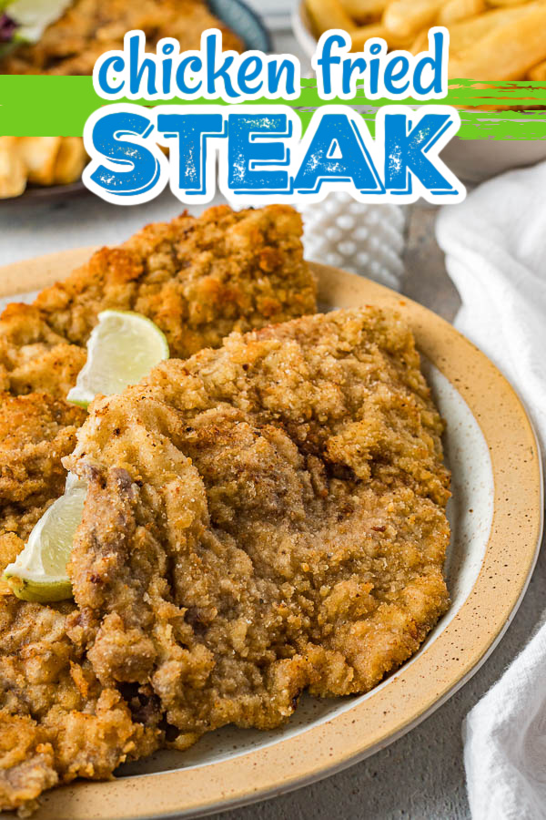

A Simple Take on Chicken Fried Steak
This is a true comfort food for my family. It is a special request meal that we indulge in only a few times a year
for a birthday or special event. Being such a rare treat, we go all out and revel in the fried deliciousness
in this recipe.
Our local grocery store has the perfect cut of a steak for this recipe. Look for meat cut for carne asada.
This is much easier to find in my home town of Phoenix then in some parts of the US. If your grocery doesn't have
that cut automatically available you can ask the meat department or just look for the thinnest cuts of steak as
that is the best cut for this meal.
Ingredients
- Thin cut of steaks i.e. carne asada cut
- Eggs
- Cooking oil. I prefer vegtable oil or canola oil for this recipe.
- Italian bread crumbs
- Milk
- Dried parsley if not in the bread crumb mixture
Steps
- Start heating a pan of oil, about 1/2 inch deep, on medium.
- While the oil is heating, set up a wet bowl of beaten eggs with a splash of milk.
- Then set up a dry bowl of Italian bread crumbs and dried parsley if needed,
at least 1 inch deep.
- Once pan is heated, dip 2-3 pieces of steak 1 at a time into wet mixture and then the dry mixture.
If you want a thicker crust/extra crispy steak repeat the egg and bread crumb mixture.
- Place the batterd steaks into the oil, cook for about 1-2 minutes per side. Depending on the oil temp you may need to do a
second turn giving an additional minute to each side.
- Repeat steps 4-5 until all steaks have been cooked.